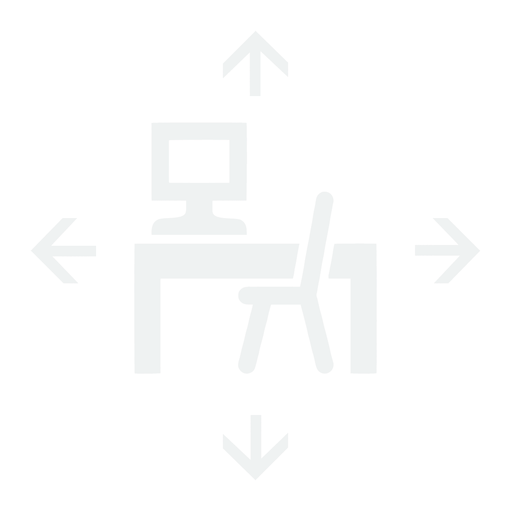

OFFICE ON DEMAND

AVAILABLE
DEVELOPING STRATEGIES FOR
UNCONDITIONAL PRESENCE,

A temporary platform platform to step in and out at any time.
On and off screen the office and the worker are never inaccessible, the office and the worker are never not one.

PERFORMING FREE
UNCONSTRAINED WORK,

The office can be stretched, expanded, condensed, modified and amplified.
It transforms adaptability into norm, free movement into performance.
It aims toward frictionless dynamism. Open plans, glass walls, communal table-desks, high
ceilings and no doors.


Versatile
OFFERING
MULTIFUNCTIONAL TOOLS
FOR OPTIMISED EFFICIENCY,

The office presents the worker with different solutions for different problems.
It beats obstacles with creativity, restless struggle with motivation, constant uncertainty with hacks.